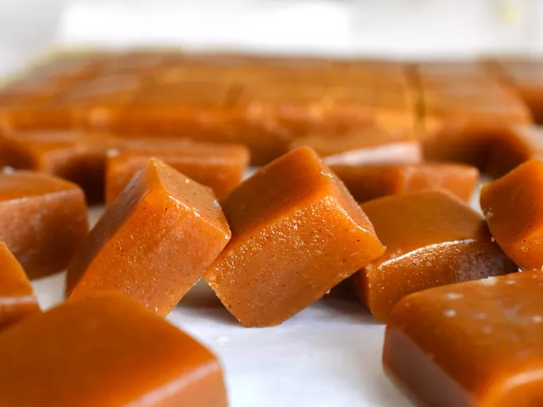

Salted Pumkin Caramels

Recipe credits to All Recipes
Home
Ingredients
- 2/3 cup unsalted pumkin seeds
- 2/3 cup pumkin puree
- 1 1/4 cups heavy cream
- 2 cups white sugar
- 1/3 cup maple syrup
- 1/4 cup light corn syrup
- 1/4 cup water
- 3 tbsp cold unsalted butter
- 1/4 tsp ground cinnamon
- 1/8 tsp ground cloves
- 1/8 tsp ground nutmeg
- 1/8 tsp salt
- 3/4 tsp white vinegar or lemon juice
- 1/4 tsp flaky sea salt
Directions
- Toast pumpkin seeds in a dry pan over medium heat, tossing often, until they just start to turn a very light golden brown, about 3 minutes. Remove from heat; transfer to a bowl to cool. Cooled seeds should taste sweet and nutty; browning too much may make them taste burnt and bitter.
- Butter an 8x8-inch heatproof dish; line with parchment. After pressing the parchment into the dish, turn it over, so that parchment is buttered on both sides. Pour pumpkin seeds into prepared dish in an even layer.
- Whisk sugar, maple syrup, corn syrup, and water together in a heavy bottomed 3-quart or larger saucepan; set aside.
- Next, prepare everything you will need to finish the caramels, and set all ingredients within reach. Stir pumpkin purée and heavy cream together in a small saucepan; place over low heat. Place butter slices in a small dish; measure cinnamon, cloves, nutmeg, and salt into another small dish. Measure vinegar, and place all ingredients near the stove, so that you can give your full attention to the caramel.
- Now, place the saucepan with cream and pumpkin mixture over low heat on the back of the stove. Place saucepan with sugar mixture over medium-high heat. Bring to a boil, whisking occasionally, then turn heat down to medium. Cook, stirring occasionally, until mixture reaches 245 degrees F (118 degrees C).
- Slowly stream in the warm cream and pumpkin mixture, whisking constantly, being careful the mixture doesn’t bubble up over the sides of the pan.
- Continue cooking on medium heat, whisking occasionally, until the mixture returns to temperature, between 240 and 245 degrees F (115 to 118 degrees C).
- Turn off heat and stir in the butter, spices, salt, and vinegar until thoroughly combined.
- Transfer caramel very slowly into the baking dish, without disturbing the layer of pumpkin seeds. Cool 10 minutes. Sprinkle flaky sea salt crystals over the top, to taste.
- Cool to room temperature, wrap, and chill in the refrigerator until cold, about 30 minutes. This will make the cutting easier.
- Cut into 64 pieces with a long thin knife, cleaning the blade with a hot damp towel if it gets too sticky to make a clean cut.
Home